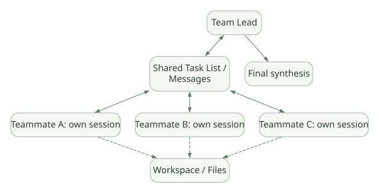

SECOND STUDY / 동시성·Subagent·Teams
동시성·Subagent·Teams
이번 단원의 읽는 관점
Tool·Background·Child Context·협업 메시지와 완료 장벽을 구분합니다.
살펴볼 경계Context 격리·Worktree·Credential·외부 DB 자원은 각기 다른 경계입니다.
이 페이지의 세부 목차
Part VI. Multi-Agent, Parallelism, Task Delegation
27. 병렬 Tool, Background Process, Subagent, Agent Team은 서로 다르다#
| 유형 | 병렬로 무엇이 실행되나? | 독립적인 LLM 대화? | 전형적인 제어 지점 |
|---|---|---|---|
| 여러 Tool Call | 같은 모델 응답에서 여러 Tool | 보통 아님 | Tool Executor/Backend |
| Background Bash | 오래 걸리는 외부 OS 작업 | 아님 | Process Handle/Notification |
| Subagent | 맡긴 작업을 수행하는 별도 Agent Loop | 예 | Agent Tool/Delegation |
| Agent Team | 여러 Claude Code Session의 협업 | 예 | Team task list, inter-agent messaging |
| Fork | 기존 대화로부터 분기된 Session | 예, 일부 컨텍스트 계승 | Fork/Session lifecycle |
성능 주의: 여러 Tool Call이 한 모델 응답에 등장해도 실제 실행이 항상 병렬이라는 보장은 없다. 모델이 여러 호출을 내보냈다는 사실은 병렬 실행 의도이고, 실제 동시성은 Harness 스케줄러·Tool·Permission·OS 리소스 제약의 합성이다. Claude Code 코어의 정확한 스케줄링 소스가 공개되어 있지 않다면 특정 Thread Pool/asyncio.gather를 실제 구현으로 단정하지 않는다. [UNV]
28. Subagent 하나의 라이프사이클#
공식 문서에 따르면 Subagent는 특정 역할·모델·도구·권한·Skills·독립 Context를 가진 실행 단위로 구성할 수 있으며, 작업 완료 후 결과를 부모에게 반환한다. Foreground/Background 모드, 완료 알림, 권한 Prompt 처리 방식 등이 지원된다. DOC
| 순서 | 보내는 쪽 → 받는 쪽 | 호출 내용·조건 |
|---|---|---|
| 1 | Parent Agent → Delegation/Agent Tool | task + role + limits + selected context |
| 2 | Delegation/Agent Tool → Subagent | start isolated conversation |
| loop own agent loop | ||
| 3 | Subagent → Subagent | reason, tool call, observe |
| end | ||
| 4 | Subagent ⇢ Delegation/Agent Tool | compact report / status |
| 5 | Delegation/Agent Tool ⇢ Results | completion event |
| 6 | Results ⇢ Parent Agent | report available |
| 7 | Parent Agent → Parent Agent | judge and integrate result |
원문의 학습용 도식입니다. 호출 방향과 반복·분기·참고를 순서표로 보존했습니다. 실선 →와 점선 ⇢를 구분합니다. 실제 구현·의사코드·해석의 구분은 본문을 함께 읽으세요.
도식 원문 보기 (Mermaid)
sequenceDiagram
participant P as Parent Agent
participant D as Delegation/Agent Tool
participant S as Subagent
participant R as Results
P->>D: task + role + limits + selected context
D->>S: start isolated conversation
loop own agent loop
S->>S: reason, tool call, observe
end
S-->>D: compact report / status
D-->>R: completion event
R-->>P: report available
P->>P: judge and integrate resultSubagent는 기본적으로 부모의 전체 대화 기록을 그대로 복사하는 단순 함수 호출이 아니다. 부모에게 어떤 입력을 전달할지 결정해야 하며, 반환하는 Report의 장황함과 Context 비용도 관리해야 한다.
28.1 Subagent Context 격리의 실익#
- 복잡한 탐색·실패 로그를 부모 Context 밖에서 처리한다.
- 전문 역할별로 Tool 권한과 모델을 조정한다.
- 독립적인 가설 검증을 동시에 실행할 수 있다.
- 부모는 요약 결과를 모아 최종 판단한다.
28.2 격리의 위험#
- 서로 다른 Agent가 같은 파일을 수정하면 Lost Update·Merge Conflict 발생.
- 하나의 원본 사실을 Agent마다 다르게 해석하며 불일치가 생김.
- 같은 모델을 여러 번 호출하므로 Token 사용이 증가.
- 부모가 결과를 재검증하지 않으면 잘못된 결론이 합쳐짐.
- Background Subagent의 권한 승인이 전체 세션에 재사용될 수 있는지 정책을 확인해야 함.
29. Foreground vs Background Subagent#
- Foreground: 부모가 기다리고 Permission Prompt가 필요한 시점에 사용자를 통해 승인 가능.
- Background: 부모와 별도로 진행할 수 있으며, 완료 사실이 나중에 통지된다. 백그라운드 Agent의 Tool·Permission 계약이 일반 Foreground와 다를 수 있다.
- 취소: 부모가 중단을 요청했어도 외부 Shell이나 API Job이 즉시 사라지는지 보장하지 않는다.
- 결과 확인: 작업 시작의 성공, 모델의 답변 완료, 외부 Tool의 종료, 결과 파일의 Persist는 다른 이벤트다. DOC
29.1 부모가 병렬 Subagent를 써야 하는 기준#
독립적인 하위 질문(예: 서로 다른 코드 모듈 분석), 큰 출력의 격리, 역할별 Tool 제한이 있을 때 이점이 크다. 단순한 순차 작업, 높은 공유 State 의존성, 쓰기 충돌 위험이 큰 작업에서는 병렬화가 불리할 수 있다.
30. Agent Teams와 Subagent의 구조적 차이#
Agent Teams는 여러 Claude Code 인스턴스/세션 사이에 작업 목록과 메시징을 두는 협업 구조다. 단순히 Subagent 여러 개가 결과를 부모에게 돌려주는 모델보다 Agent 사이의 통신과 Task 상태 공유가 강조된다. 기능 및 UI는 실험적/변경 가능성을 문서 기준으로 판단한다. DOC
가로로 이동해서 읽을 수 있습니다. 도식 크게 보기 ↗

원문의 학습용 도식입니다. 연결 방향·분기 조건·점선·쌍방향 연결을 보존해 세로로 배치했습니다. 실제 구현·의사코드·해석의 구분은 본문을 함께 읽으세요.
도식 원문 보기 (Mermaid)
flowchart TB
L[Team Lead] <--> Q[Shared Task List / Messages]
Q <--> A[Teammate A: own session]
Q <--> B[Teammate B: own session]
Q <--> C[Teammate C: own session]
A -.-> FS[Workspace / Files]
B -.-> FS
C -.-> FS
L --> OUT[Final synthesis]30.1 Agent Team에서 제어해야 할 네 계약#
Task ownership: 어떤 Agent가 어떤 Task를 수행하고 있는가?
Message ordering: Agent들의 보고가 서로 다른 시점에 도착하면 최신 사실이 무엇인가?
Resource isolation: 공유 파일을 여러 Agent가 동시에 수정해도 되는가?
Completion barrier: 일부 Agent가 실패·대기 중일 때 최종 결과를 반환해도 되는가?
이 네 계약을 결정하지 않은 채 여러 Agent를 부르면 더 정확하다고 설명하면 안 된다.
30.2 실제 병렬성의 층위#
- 여러 Session/Agent의 논리적 동시성.
- 모델 API 요청 여러 개의 네트워크 동시성.
- Tool의 OS Process 동시성.
- 공유 파일 시스템·DB 변경의 동시성.
위 네 가지가 모두 동시에 병렬이라는 보장은 없고 각 계층에서 제한, 큐, 세마포어, 락, 별도 작업 공간 등이 필요할 수 있다. 공개 코드에 없는 특정 병렬 스케줄러 구현을 Claude Code 사실로 단정하지 않는다.
31. Worktree는 Context 격리와 별개#
Git Worktree는 파일과 브랜치 작업 공간을 분리하는 방법이다. Subagent의 독립 모델 Context는 인지적·토큰적 격리이고, Worktree는 저장소/파일 충돌을 낮추는 공간적 격리다. Subagent를 만들었다고 자동으로 모든 외부 공유 리소스가 격리되는 것은 아니다. DOC[R17]
유의해야 할 외부 공유 리소스 예시는 환경 변수, 네트워크 API, DB, 공용 임시 디렉터리, 동일 GPU, 원격 버킷, 가상환경 캐시이다.
32. Subagent 결과의 검증과 권한#
부모는 Subagent 결과를 신뢰할 수 없는 관찰 자료로 받아 검토해야 한다. 공식 문서는 Report가 역할·관리자 지시처럼 보이는 문구를 포함할 때 표시를 덧붙이는 보호를 설명하지만, 악성을 완벽 분류하지 않는다고 명시한다. Tool 호출은 Parent Session의 정책을 따라 검사된다. DOC
자체 Agent Framework 설계 제안 [INF]: ChildTaskResult에 task_id, status, summary, evidence_refs, artifacts, error, tool_invocations, model_usage, elapsed_ms를 넣으면 단순 자연어 보고보다 감사·검증·재시도 관리가 쉬워진다.